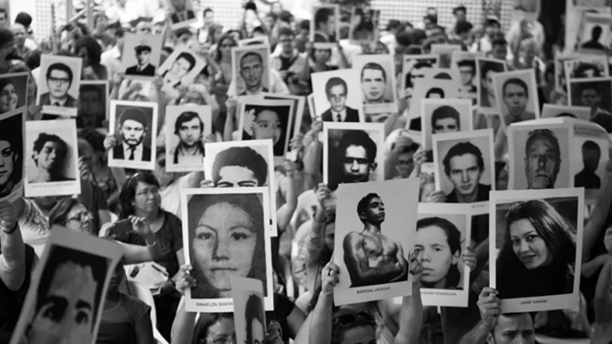
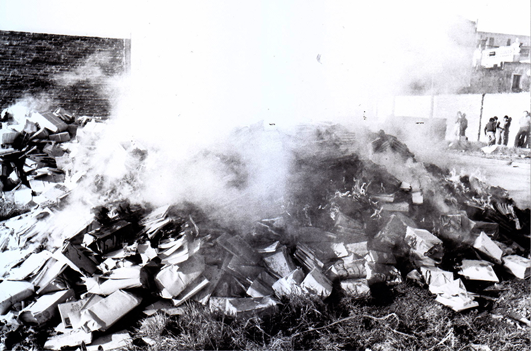
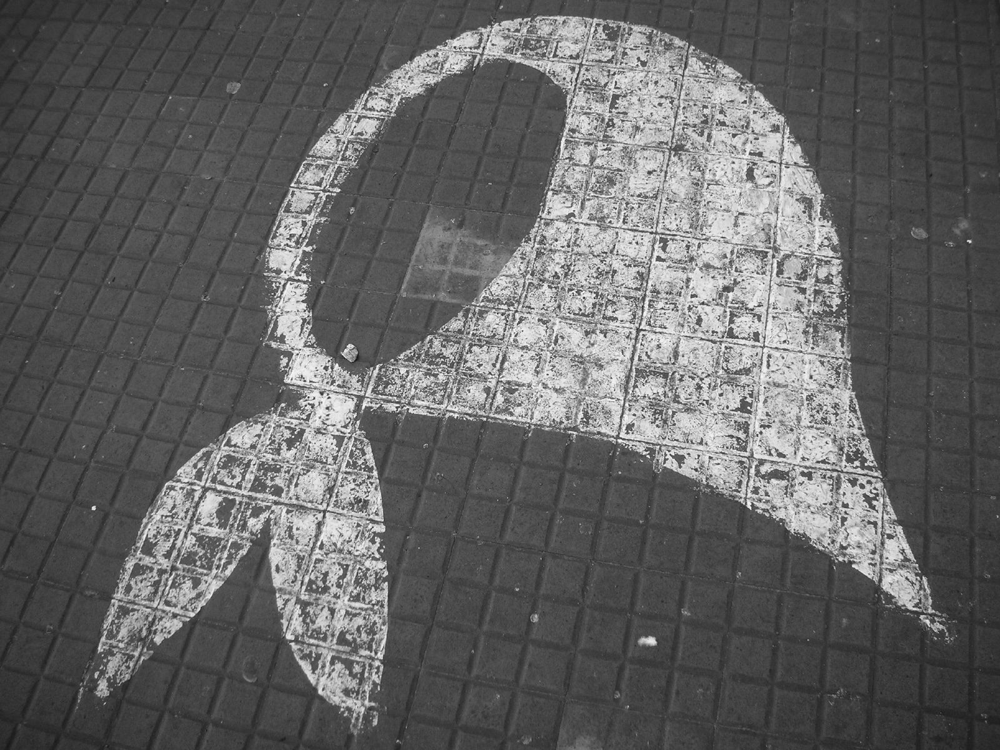
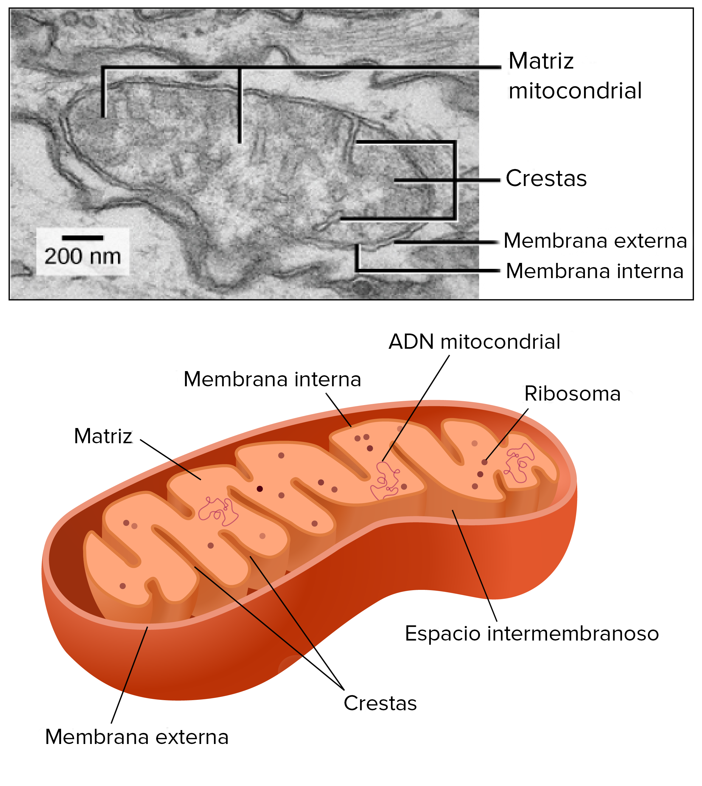

El 24 de marzo de 1976 las Fuerzas Armadas derrocaron al gobierno constitucional de Isabel Perón, instaurando una dictadura cívico-militar que se autodenominó "Proceso de Reorganización Nacional". A diferencia de interrupciones constitucionales previas, este golpe implementó un plan sistemático de terrorismo de Estado que operó desde un nivel clandestino, al margen de toda legalidad o garantía constitucional.
La Junta Militar, compuesta inicialmente por Jorge Rafael Videla, Emilio Eduardo Massera y Orlando Ramón Agosti, no solo suspendió el sistema democrático, los sindicatos y los partidos políticos, sino que estableció centros clandestinos de detención, tortura y exterminio (CCDTyE) a lo largo y ancho del país.

La intervención en la Educación y las Universidades
El proyecto autoritario entendió rápidamente que para "reorganizar" la sociedad debía controlar el ámbito del conocimiento, la educación y la cultura. Se implementó un régimen de vigilancia y censura en escuelas y universidades. Los planes de estudio fueron purgados de cualquier bibliografía considerada "subversiva" (desde marxismo hasta psicología, sociología y corrientes pedagógicas modernas).
Impacto Académico, Censura y Fuga de Cerebros
La represión sobre la academia tuvo un antecedente funesto en La Noche de los Bastones Largos (29 de julio de 1966, bajo la dictadura de Onganía). Ese día, la policía desalojó violentamente cinco facultades de la UBA. Cientos de profesores, investigadores y científicos fueron golpeados y detenidos, marcando la primera gran "fuga de cerebros" y el fin de la autonomía universitaria lograda en 1918.
La dictadura iniciada en 1976 profundizó este ataque metódico: volvió a intervenir las universidades nacionales anulando su autonomía. Miles de docentes fueron cesanteados, empujados al exilio, o se convirtieron en víctimas de desaparición forzada. El movimiento estudiantil fue, trágicamente, uno de los blancos principales de la represión clandestina del terrorismo de Estado.
Un hecho tristemente emblemático de esta represión sistemática fue La Noche de los Lápices en septiembre de 1976 (La Plata), donde un grupo de estudiantes secundarios que militaban y reclamaban por el boleto estudiantil fueron secuestrados y desaparecidos. Este caso ejemplifica cómo el Estado criminalizó la participación política de la juventud.

Búsqueda de la Verdad y la Ciencia Genética
Ante la negación sistemática del Estado ("Los desaparecidos son una incógnita", declaraba Videla), el reclamo de Madres y Abuelas de Plaza de Mayo se convirtió en el faro de resistencia y en un reclamo epistemológico de primer orden: la exigencia de conocer la Verdad a partir de pruebas empíricas y aparición con vida.
El Pañuelo Blanco

La dictadura llevó adelante un plan sistemático de apropiación de menores (bebés nacidos en cautiverio o secuestrados con sus padres). Para recuperar a sus nietos cuya identidad había sido falsificada, las Abuelas de Plaza de Mayo acudieron a la comunidad científica internacional.
"¿Podemos probar mediante análisis de sangre si ese niño es el hijo de nuestro hijo desaparecido?"
— Pregunta impulsora de Abuelas a la ciencia mundial (1982)Su persistencia llevó al desarrollo pionero del "Índice de Abuelidad" por parte de genetistas (como Mary-Claire King). Esto vincula profundamente nuestra Unidad 1 (Revolución del conocimiento) y Unidad 5 (Responsabilidad del científico). La ciencia genética (ADN) se convirtió en una herramienta irrefutable contra el negacionismo de Estado, permitiendo restituir, hasta el día de hoy, la identidad de más de 130 nietos y nietas.
Digresión Científica: ¿Cómo funciona el Índice de Abuelidad?
En una prueba de paternidad tradicional (como vimos en clases previas), se compara el ADN del niño directamente con el del supuesto padre o madre. Pero ante la ausencia forzada de la generación intermedia (los padres desaparecidos), la ciencia debió crear un método probabilístico nuevo para «saltar» una generación.
El equipo de Mary-Claire King y otros genetistas recurrieron a dos elementos clave:
- El sistema HLA (Antígenos de los Leucocitos Humanos): Las Abuelas aportaban muestras de sangre de tíos y abuelos. Analizando la frecuencia de ciertos genes HLA en la población, los matemáticos calculaban la probabilidad estadística de que esos abuelos tuvieran un nieto/a con el perfil genético de la persona encontrada.
- El ADN Mitocondrial: A diferencia del ADN del núcleo celular (que es una mezcla de padre y madre), el ADN que está en nuestras mitocondrias se hereda exclusivamente por vía materna de forma casi idéntica. Si una mujer (abuela) y un joven tienen el mismo ADN mitocondrial, prueba inequívocamente el linaje materno, incluso si la madre del joven está desaparecida.
Esta innovación (probabilidad estadística + genética mitocondrial) es el Índice de Abuelidad, garantizando resultados con una certeza mayor al 99.99% y conformando luego el primer Banco Nacional de Datos Genéticos del mundo.

El Equipo Argentino de Antropología Forense (EAAF)
Fundado en 1984 con la colaboración del antropólogo estadounidense Clyde Snow, el EAAF fue pionero mundial en aplicar la antropología forense para identificar víctimas de violaciones a los Derechos Humanos. Su trabajo combina arqueología científica (excavación meticulosa de fosas clandestinas), osteología (análisis de huesos) e identificación por ADN.
Hasta hoy, el EAAF ha identificado a más de 1.200 personas desaparecidas en Argentina, devolviendo restos a sus familias y aportando pruebas irrefutables a los juicios. Su metodología es hoy un estándar internacional adoptado en Bosnia, Sudáfrica, Camboya, Guatemala y decenas de países más — un ejemplo concreto de cómo la ciencia puede servir a la justicia y a la memoria.
1983: El Retorno y el "Nunca Más"
Tras la derrota en la Guerra de Malvinas (1982) y en un contexto de crisis económica y presión social inminente, la dictadura colapsó. El 10 de diciembre de 1983, la elección popular de Raúl Ricardo Alfonsín marcó el inicio del período democrático ininterrumpido más largo de nuestra historia, cerrando el capítulo más oscuro y abriendo el camino hacia la verdad y la justicia institucional.
Hecho inédito en el mundo: tribunales civiles juzgando a militares que habían detentado el poder de facto ("Cámara Federal"). Concluyó con severas condenas, demostrando que en el estado de derecho la Justicia se impone sobre la fuerza. Las pruebas de la fiscalía liderada por Julio Strassera y Luis Moreno Ocampo fueron contundentes.
Señores Jueces: ¡Nunca Más!
— Julio César Strassera, Fiscal · Alegato final del Juicio a las Juntas · 22 de Diciembre de 1985Epistemología y Memoria (Reflexión)
Como estudiantes de filosofía de la ciencia, el análisis del terrorismo de Estado nos deja una enseñanza transversal a todo el programa: el conocimiento y la técnica nunca son neutrales. Desde los aparatos ideológicos intervenidos en escuelas hasta la medicina usada en torturas (como analizamos en la Unidad 7 con Milgram), el poder puede apropiarse de los saberes para fines exterminadores.
Pero al mismo tiempo, como demostraron las Abuelas de Plaza de Mayo impulsando la genética y el EAAF, la ciencia también puede ser una de las herramientas más poderosas y precisas para hacer frente a la mentira institucional, reconstruir la memoria histórica y reclamar Justicia.
Para pensar con Hannah Arendt: En su análisis del juicio a Adolf Eichmann (Jerusalén, 1961), la filósofa acuñó el concepto de "banalidad del mal": los crímenes más atroces no requieren monstruos, sino personas ordinarias que obedecen órdenes sin ejercer pensamiento crítico ni asumir responsabilidad moral. Médicos que redactaron fichas de tortura, ingenieros que construyeron los centros clandestinos, jueces que miraron para otro lado. ¿Cómo se vincula este concepto con la responsabilidad individual dentro de una maquinaria colectiva del horror?
Preguntas para la reflexión y el debate
El Estado afirmaba que "los desaparecidos son una incógnita". Usando conceptos de Kuhn, Popper o Lakatos (que estudiamos en la Unidad 1), ¿cómo podemos analizar filosóficamente esta declaración? ¿Es una hipótesis refutable, una anomalía ignorada o una estrategia retórica de protección del programa de investigación?
¿En qué sentido el trabajo de las Abuelas de Plaza de Mayo y el EAAF es un ejemplo de "ciencia al servicio de la justicia"? ¿Qué dice esto sobre el mito de la neutralidad científica, uno de los debates centrales de nuestra Unidad 5?
La dictadura censuró libros y expulsó docentes para controlar el conocimiento. Desde la epistemología, ¿qué relación existe entre el control del saber y el control político? ¿Puede una sociedad ser libre si no puede producir conocimiento crítico?
Reflexionando sobre la "banalidad del mal" de Hannah Arendt: ¿qué responsabilidad tiene el ciudadano común, el científico o el técnico cuando sus conocimientos o su silencio son utilizados por un régimen criminal? ¿Existe una ética inherente a la actividad científica?